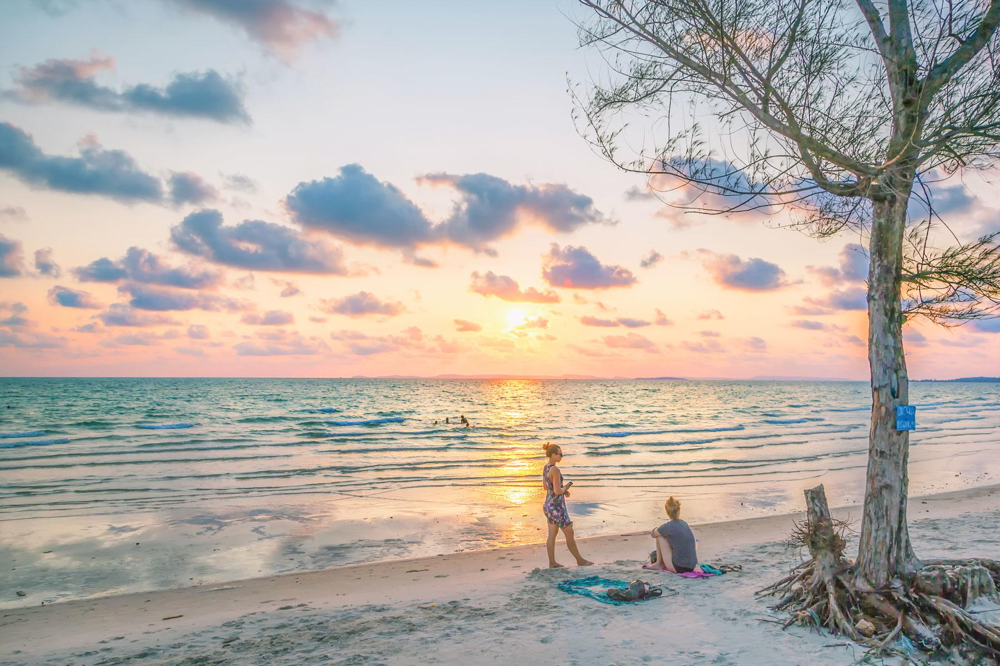
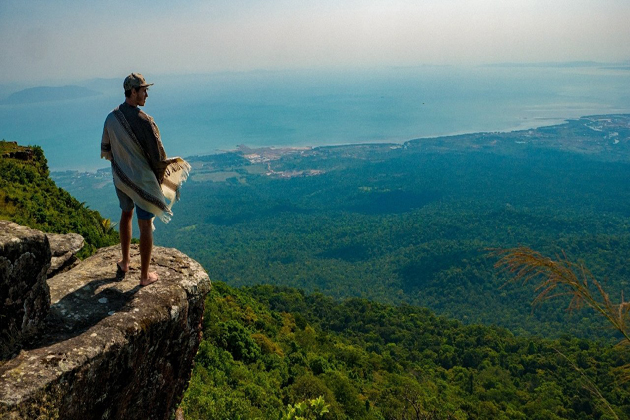

worldwide
A global travel agency is a provider of travel management services on a global scale.
These agencies differ in terms of their size and scale, as
adventures
Adventure travel is a type of tourism, involving exploration or travel with perceived (and possibly actual) risk,
and potentially requiring specialized skills and physical exertion.
food & drinks
Is Cambodia expensive to travel? No, Cambodia is an extremely cheap travel destination, and both food, as well as accommodation options,
are quite budget-friendly over here. If you spend around USD 25 per day, you can have a very leisurely stay here.
affordable hotels
Image result for hotels in cambodia
Siem Reap is definitely the best city to stay in Cambodia with your family. While Angkor Wat may be the main draw, there are so many more things to
see in Siem Reap with your family than just visiting the temples
affordable price
Overall, food is very cheap in Cambodia. A meal from local street vendors costs about $1-3 USD per meal, while street snacks are even less. Basic restaurant meals cost between $3-5 USD for a typical dish like curry or
fish and rice. Western meals generally cost $5-10 USD.
Support 24h
Although most visits are trouble-free, crime can still occur. Most incidents are bag snatchings, often by thieves riding past on motorbikes. Bag straps have .
blogs & posts
we untold stories
Life is a journey, not a destination
Angkor Wat is a temple complex in Cambodia and is the largest religious monument in the world, on a site measuring
162.6 hectares. Originally constructed as a Hindu temple dedicated to the god Vishnu for the Khmer Empire by King

Life is a journey, not a destination
Angkor Wat is a temple complex in Cambodia and is the largest religious monument in the world, on a site measuring
162.6 hectares. Originally constructed as a Hindu temple dedicated to the god Vishnu for the Khmer Empire by King

Life is a journey, not a destination
Angkor Wat is a temple complex in Cambodia and is the largest religious monument in the world, on a site measuring
162.6 hectares. Originally constructed as a Hindu temple dedicated to the god Vishnu for the Khmer Empire by King
Life is a journey, not a destination
Angkor Wat is a temple complex in Cambodia and is the largest religious monument in the world, on a site measuring
162.6 hectares. Originally constructed as a Hindu temple dedicated to the god Vishnu for the Khmer Empire by King